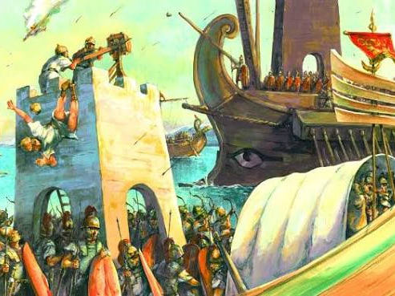

Введение
Гай Юлий Цезарь Октавиан Август (при рождении — Гай Октавий, а с 27 года до нашей эры — император Август) — выдающийся государственный и политический деятель древности, первый римский император, положивший конец эпохе разрушительных гражданских войн и основавший систему принципата. Под его мудрым и жестким правлением античный мир вступил в период долгожданного мира и экономического расцвета, вошедшего в историю как «римский мир» (Pax Romana).
От рождения до полководца
Гай Октавий родился 23 сентября 63 года до нашей эры в зажиточной, но не принадлежащей к высшей сенатской знати всаднической семье из города Велитры. Его отцом был сенатор и претор Гай Октавий, а матерью — Атия, племянница великого полководца и диктатора Гая Юлия Цезаря. Ранняя смерть отца (когда мальчику было всего четыре года) и исключительные способности юноши привлекли внимание Юлия Цезаря, который не имел законных сыновей и фактически приблизил к себе внучатого племянника.
Поворотным моментом в жизни восемнадцатилетнего Октавия стало трагическое убийство Юлия Цезаря мартовскими идами в 44 году до нашей эры. Узнав из завещания диктатора, что он официально усыновлен и назначен главным наследником его огромного состояния и имени, молодой Октавий проявил недетскую политическую волю. Он незамедлительно вернулся в Рим, принял имя Гая Юлия Цезаря и вопреки советам близких заявил о своих правах.
В условиях острого политического кризиса Октавий продемонстрировал блестящие дипломатические и организаторские способности. Сначала он объединил силы с сенатом против могущественного Марка Антония, но затем заключил с ним и легатом Марком Эмилием Лепидом знаменитый Второй триумвират (43 год до нашей эры). Разгромив убийц Цезаря — Брута и Кассия — в битве при Филиппах в 42 году до нашей эры, триумвиры поделили римский мир.
Неизбежное столкновение между амбициозными союзниками завершилось 2 сентября 31 года до нашей эры грандиозной морской победой флота Октавиана (которым фактически командовал его верный соратник Марк Випсаний Агриппа) над объединенными силами Марка Антония и египетской царицы Клеопатры в битве при Акциуме. После последовавшего за этим самоубийства Антония и Клеопатры и присоединения Египта в 30 году до нашей эры Октавиан стал единоличным правителем всего римского мира.
